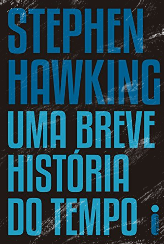

Uma Breve História do Tempo
Uma Breve História do Tempo: do Big Bang aos Buracos Negros (título original, em inglês "A Brief History of Time:From the Big Bang to Black Holes") (Lisboa: Gradiva, ISBN 972-662-010-4 ; 1988; Rio de Janeiro: Rocco, ISBN 85-325-0252-0 ; 1988), é um livro de divulgação científica escrito pelo Professor Stephen Hawking, publicado pela primeira vez em 1988.
Explica vários temas de Cosmologia, incluindo a Teoria do Big Bang, os buracos negros, os cones de luz e a Teoria das Supercordas ao leitor não especialista no tema. Seu principal objetivo é dar uma visão geral do tema mas, não usual para um livro de divulgação, também tenta explicar algo de matemáticas complexas.
O autor adverte que ante qualquer equação no livro o leitor poderia ver-se em problemas, pelo que incluiu só uma simples equação: E = mc².
Possui uma introdução escrita pelo divulgador científico Carl Sagan.
Ele rapidamente veio a se tornar um "best-seller". Em maio de 1995 entrou na lista do The Sunday Times entre os mais vendidos durante 237 semanas, batendo o record de 184 semanas e sendo citado no Livro Guinness dos Records de 1998. Também está registrado o feito de que a edição se publicou em 6 de abril de 1995 e alcançou o primeiro lugar entre os mais vendido em três dias. Até abril de 1993 haviam-se publicado 40 edições de capa dura nos Estados Unidos e 39 no Reino Unido. Teve vendas de 9 milhões de exemplares até 2002.
Faça o Download da obra completa Aqui